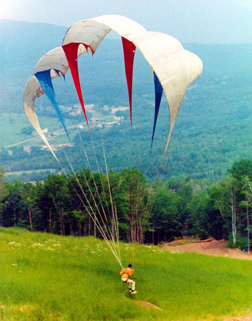

|  |
Parachutisme
+
Montagne
+
Vol libre
=
Paraplane
|
1978

|
1987
- Compétitions
- Constructeurs
- Fédérations & écoles
|
Aujourd’hui
Aile
- Voile
- Suspentes
- Elévateurs
Sellette
- Pilotage
- Sécurité
- Confort
- Performance
Parachute de secours

Instruments

Vent relatif
Traînée
Force de résistance à la pénétration dans l’air
opposée à la trajectoire
Portance
Force s’exerçant vers le haut
perpendiculairement à la vitesse
RFA
|
|
Portance
+
Traînée
=
RFA
(opposée au poids)
|
Comment rester en l’air ?
|
Ascendance
thermique
|
Ascendance
dynamique

|
OK mais dans mon travail ?
Analyse de l’environnement
Jouer avec la nature
Kite
Voyager autrement
TODO: mozaic photo ?